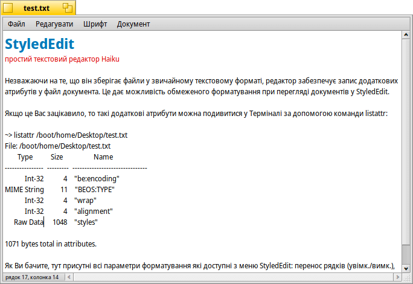

StyledEdit (Текстовий редактор)
| Deskbar: | ||
| Розташування: | /boot/system/apps/StyledEdit | |
| Налаштування: | відсутні |
StyledEdit – простий текстовий редактор в системі Haiku. Незважаючи на те, що він зберігає файли у звичайному текстовому форматі, редактор забезпечує запис додаткових атрибутів у файл документа. Це дає можливість обмеженого форматування при перегляді документів у StyledEdit.
Якщо це Вас зацікавило, то такі додаткові атрибути можна подивитися у Терміналі за допомогою команди listattr:
~> listattr /boot/home/Desktop/test.txt
File: /boot/home/Desktop/test.txt
Type Size Name
----------- --------- -------------------------------
Int-32 4 "be:encoding"
MIME String 11 "BEOS:TYPE"
Int-32 4 "wrap"
Int-32 4 "alignment"
Raw Data 1048 "styles"
1071 bytes total in attributes.
Як Ви бачите, тут присутні всі параметри форматування які доступні з меню StyledEdit: перенос рядків (увімк./вимк.), вирівнювання (вліво/центр/вправо), кожний в окремому атрибуті. Стилі (шрифт, розмір, колір) кожної літери попадають в інші.
У будь-якому випадку, це гарна ідея – мати можливість розфарбовувати текст використовуючи різні шрифти та розміри в звичайному текстовому файлі. Наприклад, файл ReadMe.txt можна читати в оболонці командного рядка на будь-якій платформі і, при цьому, він все ще має певний стиль, якщо його переглянути у Haiku.
Насправді використання StyledEdit настільки просте, що ми пропустимо пояснення кожного буденного пункту меню. Просто наберіть свій текст, потім виберіть слова які Ви бажаєте відформатувати та застосуйте до них шрифт, розмір і колір з пункту меню . Перенос рядків та вирівнювання тексту з пункту працює тільки для всього файлу.